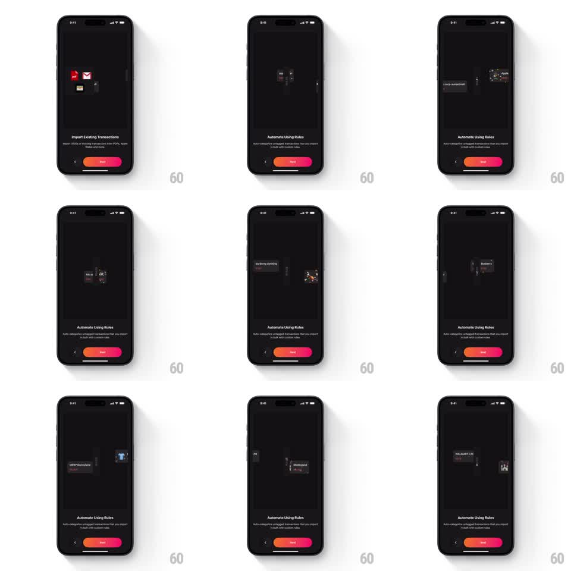

Media
Frame-by-frame

Rebuild this animation 1:1: Finma's rules-based auto-categorize onboarding loop - on the dark "Automate Using Rules" page, raw text transaction cards ("burberry clothing", "UBER *TRIP", "WALMART-C 12", "MGM*Disneyland") slide through a central rules filter and emerge on the other side as clean branded cards with merchant logos, looping continuously.

Rebuild this animation 1:1: Finma's rules-based auto-categorize onboarding loop - on the dark "Automate Using Rules" page, raw text transaction cards ("burberry clothing", "UBER *TRIP", "WALMART-C 12", "MGM*Disneyland") slide through a central rules filter and emerge on the other side as clean branded cards with merchant logos, looping continuously.
## Integration
Integration: stack-agnostic spec - springs given as stiffness/damping, timed motions as duration + curve; map every value to your framework and animation library of choice.
## Scene
Dark onboarding page: illustration stage filling the upper two-thirds - raw gray text cards on the left, a vertical filter/rules gate at center, clean branded cards (Burberry, Apple, Walmart logos with category tags) on the right. Below: "Automate Using Rules" title, "Auto-categorize untagged transactions that you import in bulk with custom rules" subcopy, pager dots, back chevron, and an orange-to-red gradient "Next" pill. The previous page ("Import Existing Transactions") shares the layout.
## Motion spec
Pattern: looping conveyor through a transform gate.
- A raw card slides in from the left (translateX, 600ms, ease-out) and queues at the gate (pause 200ms, slight scale 0.98 dip).
- Passing through: the card compresses horizontally (scaleX 1 -> 0.7, 200ms) inside the gate while its raw text scrambles/fades (150ms).
- Emerging: the card expands (scaleX 0.7 -> 1, spring ~320/18) as a branded card - logo popping (scale 0.6 -> 1, spring ~340/14) and category tag fading in (150ms) - then slides right and stacks with earlier results (400ms).
- Multiple cards run offset phases (600ms apart) so the conveyor never empties; the loop runs continuously.
- Next/back: the page crossfades (250ms) between onboarding steps; the stage animation keeps running underneath.
## Calibration
- Raw cards are gray and text-only; branded cards are dark with a colored logo and a small category chip - the before/after contrast is the point.
- The gate glows subtly (edge highlight, opacity 0.4 -> 0.7 pulse, 2s loop).
## Reduced motion
Cards crossfade through the gate (300ms) without conveyor motion; the loop pauses between cards (1s).
## Don't miss
- The raw strings keep their messy merchant formatting (caps, asterisks, suffixes) - the rules clean them.
- The gradient Next pill stays fixed at the bottom across steps.